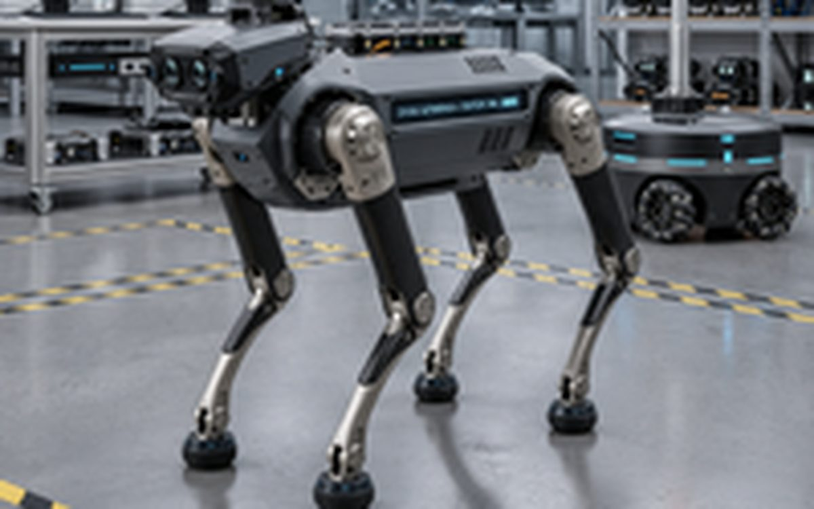

Giọng nói tiếng Việt
Robot nghe và nói tiếng Việt: nhận dạng giọng nói và đọc câu trả lời thành tiếng.
Mình nhận lập trình phần mềm AI theo yêu cầu của bạn, cho robot Vector hoặc robot tự chế. Từ server riêng, tích hợp Xiaozhi, ChatGPT, DeepSeek đến giọng nói tiếng Việt, lệnh thoại và hành vi riêng của robot, bạn nhận được trọn quy trình: tiếp nhận nhu cầu, chốt phương án, lập trình, cài đặt, chạy thử cùng robot của bạn và bàn giao kèm hướng dẫn. Jr Automation báo giá rõ ràng trước khi làm và cam kết bàn giao đúng tiến độ đã chốt.
Giá báo theo từng dự án
Phần mềm AI nằm giữa robot và các model
Robot nói, phần mềm xử lý giọng nói và lệnh, rồi gọi model AI bạn chọn để trả lời.
Chọn phần bạn cần. Mỗi dự án mình báo giá theo đúng phạm vi.
Robot nghe và nói tiếng Việt: nhận dạng giọng nói và đọc câu trả lời thành tiếng.
Nối robot với Xiaozhi, ChatGPT, DeepSeek hoặc model khác. Đặt tính cách và vai trò riêng cho robot.
Tạo câu lệnh theo ý bạn: nói một câu, robot làm đúng một việc đã định.
Nối robot với thiết bị trong nhà, như đèn, theo yêu cầu và tùy thiết bị hỗ trợ.
Lập trình cách robot tự di chuyển, tránh vật cản, chống rơi mép bàn và làm động tác khi nghe lệnh.
Trang web để đổi Wi-Fi, chọn model AI, xem nhật ký. Cập nhật phần mềm qua Wi-Fi. Tùy robot.
Bốn cách làm hay gặp. Bạn có thể chọn một cách, hoặc mô tả nhu cầu để mình đề xuất phương án phù hợp.
Phù hợp khi bạn muốn robot nghe lệnh ổn định, không phụ thuộc máy chủ của hãng.
Mình làm
Server cần bật liên tục để robot nghe lệnh.
Phù hợp khi bạn không muốn bật thêm máy tính hay Raspberry Pi chỉ để robot trò chuyện.
Mình làm
Phương án này thay đổi phần mềm trên robot, nên mình giải thích rõ phạm vi thay đổi và chốt với bạn trước khi làm.
Phù hợp khi bạn có nhiều robot dùng chung một hệ thống, hoặc muốn tự chọn thành phần nghe, hiểu và nói.
Mình làm
Chi phí chạy model AI và máy chủ thuê do nhà cung cấp tính. Mình báo trước các phương án để bạn chọn.
Phù hợp khi bạn đã có khung robot, ví dụ robot chó 4 chân in 3D, và cần phần mềm để robot nghe lệnh, trả lời và tự di chuyển.
Mình làm
Bạn tự chuẩn bị servo và linh kiện. Mình báo giá phần mềm và sơ đồ đấu nối.


Xiaozhi là nền tảng trợ lý giọng nói AI mã nguồn mở, ban đầu chạy trên bo mạch ESP32. Robot thu giọng nói, Xiaozhi chuyển thành chữ, nhờ model AI hiểu và trả lời, rồi đọc câu trả lời thành tiếng.
Mình đưa Xiaozhi vào robot của bạn theo hai cách:
Cài đặt gọn, phù hợp khi bạn muốn thử nhanh hoặc dùng cho một robot.
Bạn chủ động chọn thành phần nghe, hiểu, nói và quản lý nhiều robot cùng lúc.
Mỗi bước có đầu ra rõ ràng, bạn biết dự án đang ở đâu.
Bạn cho mình biết robot, tính năng mong muốn và model AI nếu đã chọn.
Mình đề xuất cách làm phù hợp, nói rõ phạm vi việc và chi phí.
Mình viết phần mềm, cài đặt và thử cùng robot của bạn.
Bàn giao kèm hướng dẫn sử dụng bằng tiếng Việt.
Bạn mô tả robot đang có và điều bạn muốn robot làm. Mình đề xuất phương án gọn nhất và báo giá trước khi bắt đầu.
Phương án server riêng dùng được với cả Vector 1.0 và 2.0. Phương án robot kết nối thẳng tới Xiaozhi hiện áp dụng cho Vector 1.0.
Xiaozhi là phần mềm mã nguồn mở. Chi phí tùy cách bạn dùng: dịch vụ có sẵn hay server riêng, và model AI bạn chọn có tính phí theo lượng dùng hay không. Mình nói rõ từng phương án khi báo giá.
Bạn gửi mô tả hoặc ảnh robot. Robot dùng bo mạch ESP32-S3 làm được với Xiaozhi. Với loại khác, mình xem rồi trả lời có làm được không.
Mô tả ngắn robot và điều bạn muốn. Ảnh và video nhắn thêm qua Zalo cho nhanh.